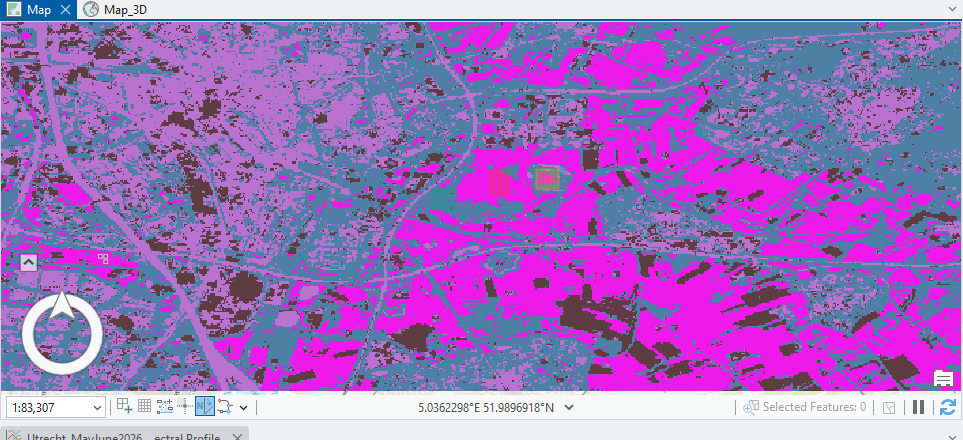
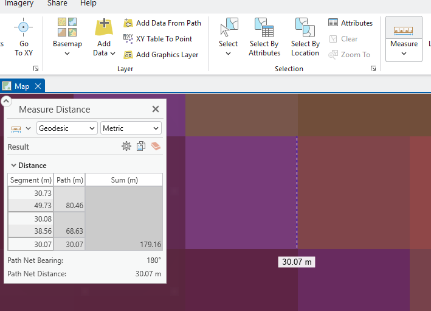
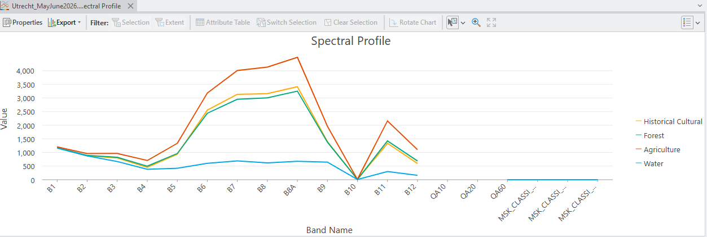
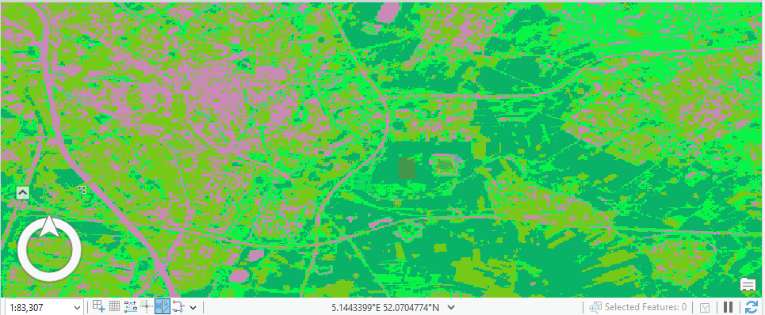
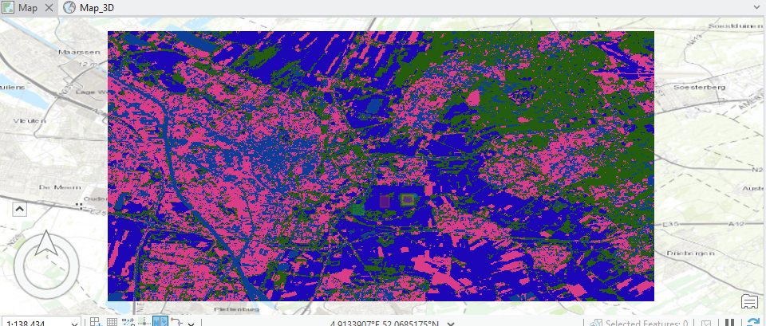
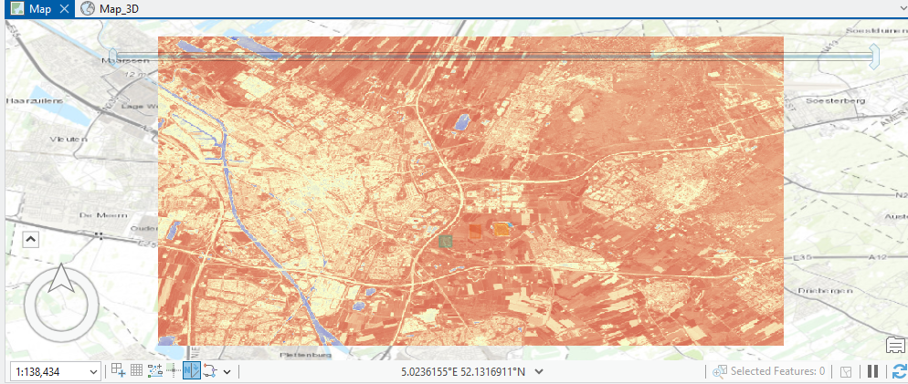

Concepts
Classification
What is supervised and unsupervised classification?

Land Use Classification
The satellites make images of the Earth's surface periodically. However, the pixel scale is large because otherwise the data would be too large. The data is to rough to use but too massive to label by hand. The value of automated land cover classification is that it allows for the classification of raw satellite images into meaningful categories quickly and consistently. For this assignment, I run different classification of the areal image of Utrecht. In this case, the approximate length and width of each pixel were 30m.

There are two types of land cover classification: supervised and unsupervised classification. In supervised classification, the analyst provides the algorithm with training samples. On the other hand, in unsupervised classification, the algorithm groups pixels into clusters without any prior labels. It identifies natural patterns in the data, and the analyst interprets the clusters afterward.
Spectral Profile of chosen Areas in Utrecht

Screenshot of my Unsupervised Pixel Based Classification
Screenshot of my Unsupervised Object Based Classification

Screenshot of my Supervised Pixel Based Classification

Lastly, I run an NDVI analysis. For this map, my target audience is Biologists. I chose this color because they are used to label healthy vegetation in red.

In conclusion, the strength of unsupervised classification is its speed and efficiency. In a scene, they are “unbiased” to human eyes. However, there are higher chance that classes may not match real‑world categories. On the other hand, supervised classification is highly accurate but requires human time and high-quality training data. It is more suited for targeted mapping.